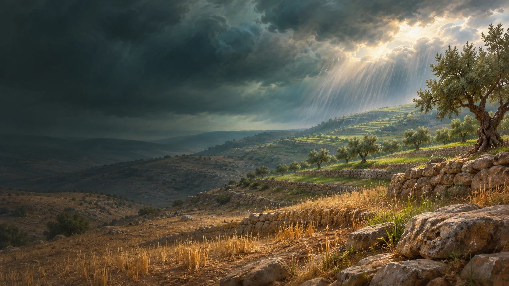

HOSEA & JOEL / STUDENT STUDY / NOVEMBER 16–22
JOEL 2:28
“I will pour out
my spirit upon
all flesh.”
What could that promise mean
when life feels uncertain?
IMAGINED LANDSCAPE · JOEL’S IMAGERY OF LOSS & RENEWAL
A companion, not a replacement for the lesson. Begin with a short prayer. You can think quietly or write in your own notebook. Nothing personal needs to be shared.
THE QUICK PATH
A promise in a
broken landscape.
Before the famous promise, there is a story of loss.
CONTEXT · ORIGINAL SUMMARY
What has been lost?
Joel describes crops destroyed, trees withered, and people grieving. Even the land seems to mourn.
For a farming community, this is not just a bad view. The harvest is food, work, and the future. Joel calls the people to turn back to the Lord with their whole hearts.
See the setting · Joel 1:4, 10–12THEN THE PROMISE CHANGES THE HORIZON
“And ye shall know that I am in the midst of Israel”
Joel 2:27 · KJV excerpt
The Lord promises renewal, but also something more personal: His presence among His people.
Read the invitation and promise · Joel 2:12–13, 25–27 ↗What is the difference between “everything will be easy” and “you will not be alone”?
Look closer: what is actually promised?
Joel speaks of restored fields and of God’s presence (2:21–27). The chapter also speaks of trouble ahead (2:30–32). It is not a guarantee that faithful people never suffer. God’s help matters in a difficult world, not only after every problem disappears. Someone’s hardship is not proof that they have done something wrong.
READ · JOEL 2:28–29
Who gets to be
part of this?
28 And it shall come to pass afterward, that I will pour out my spirit upon all flesh; and your sons and your daughters shall prophesy, your old men shall dream dreams, your young men shall see visions:
29 And also upon the servants and upon the handmaids in those days will I pour out my spirit.
King James Version · scripture, not a paraphrase
Read Joel 2:27–29 in contextWhy name these people instead of simply saying “prophets”?
Open a phrase. Notice who is included.
Sons & daughters
Both women and men are named. The promise is not reserved for one gender.
Old & young
Young people are explicitly included. You do not have to grow into someone else’s age before you can seek the Lord’s guidance.
Servants & handmaids
People with low social status are named too. Prestige and influence do not set the limits of God’s invitation.
“All flesh” widens the invitation. It does not mean everyone has the same gift or experience, or that every thought is revelation.
See where Jesus enters the story →JOEL → PENTECOST → THE LATTER DAYS
Not just a feeling.
A living Savior.
After Jesus rose from the dead, His disciples were filled with the Holy Ghost at Pentecost. People heard them speak in languages they understood.
Peter explained the event using Joel’s prophecy. Then he pointed to the risen Jesus as the One who poured out what they were seeing and hearing.
32 This Jesus hath God raised up, whereof we all are witnesses.
33 Therefore being by the right hand of God exalted, and having received of the Father the promise of the Holy Ghost, he hath shed forth this, which ye now see and hear.
Acts 2:32–33 · King James Version
Optional context · Acts 2:16–18, 32–33What does Peter’s explanation teach you about Jesus, not just about the disciples?
Follow the connection
Peter’s message is that Jesus lives and is exalted with the Father. The outpouring of the Spirit points people toward Him. Spiritual gifts are not a contest over who has the most impressive experience.
THE STORY DOES NOT END AT PENTECOST
Moroni also quoted Joel’s promise to Joseph Smith, saying it was not yet fulfilled but soon would be. That gives us a reason to explore its latter-day reach, not to treat Pentecost as the only moment it could describe.
Joseph Smith—History 1:41 Explore multiple fulfillments in Deep learning ↓NOTICE · WITHOUT FORCING
What if it’s quiet?
You hear someone describe a powerful spiritual experience. Yours does not feel like that. Does that mean you have been left out?
Elder Gary E. Stevenson counsels us not to try to make a spiritual experience happen. We can seek the Lord and wait patiently without comparing our experiences with someone else’s.
Optional · Elder Stevenson, Promptings of the SpiritNOT A TEST TO PASS
You do not need to cry, invent an experience, or make inspiration arrive on demand.
AN INVITATION TO PRACTICE
Seek the Lord patiently. Notice what draws you toward Jesus Christ and what His teachings invite you to do.
If guidance can be quiet, what could you make room for this week?
What if I am unsure about an impression?
Check it against scripture and prophetic teaching. Do not assume every thought is a message from God. “I am still learning to recognize the Spirit” is an honest place to begin. You can talk with a trusted parent or teacher without sharing anything you want to keep private.
TAKE THE PROMISE WITH YOU
You do not have to
force the rain.
You can make room to receive.
Joel’s people needed renewal. The Lord promised His presence and His Spirit. That invitation reaches young people too, without requiring everyone’s experience to look the same.
Choose one small practice and a time to try it. These are invitations, not a test of your faith.
Read.Make room for a question.
Read a few verses about Jesus. Ask: “What do these words help me understand about Him?” Keep one question in your notebook, including anything that remains unclear.
Pray.Bring what is real.
Tell Heavenly Father about a question or difficulty that matters to you. Pause without demanding an immediate answer. You do not need a dramatic feeling to have prayed honestly.
Act.Follow the good you already know.
Choose one invitation from scripture: include someone, make peace, or offer quiet help. Decide when you will do it. You do not have to wait for a special feeling to practice Christ’s teachings.
“This week, I will try one small thing.”
Keep your answer private. Close with prayer. Afterward, notice what you learned, including what remains unclear. No immediate feeling is required. Bring one question or one thing you noticed to class.
You’ve finished the quick path. Stop here, or follow a deeper question below.
OPTIONAL · ABOUT 5 MINUTES PER MODULE
Follow a deeper question.
Do all four or choose the question that interests you most. These modules add context and comparison. Where a passage appears again, use the new question to look more closely.
What kind of world receives this promise?
Return to the renewal passage in its wider setting. Make two short lists: What sounds frightening? What gives people reason to hope?
Notice that the Lord’s promise does not depend on the world becoming trouble-free first.
What difference could His presence and guidance make when your circumstances are still difficult?
Was Joel’s prophecy fulfilled only once?
Then open Scripture Helps and find “What does it mean that the Lord will ‘pour out [His] spirit upon all flesh’?”
Open Scripture Helps: Hosea and Joel ↗Follow its link to President Hinckley’s “Living in the Fulness of Times.” Read from the paragraph beginning “The era in which we live” through the paragraph about the restored priesthood.
Living in the Fulness of Times · President Gordon B. Hinckley ↗What examples does he connect with latter-day enlightenment?
Pentecost was a fulfillment, but not the whole story. Write one sentence explaining how a prophecy can reach across more than one time.
Does everyone receive the same spiritual gift?
Make two columns: What comes from the same source? What can differ between people?
Why would comparing your experiences with someone else’s be a poor way to decide whether God cares about you?
Notice how these verses connect spiritual knowledge and gifts with Christ. Choose one question about Jesus that you would like to understand better.
How can I become more receptive?
What attitudes are contrasted?
Then open President Nelson’s “Revelation for the Church, Revelation for Our Lives.” Find the paragraph beginning “In like manner, what will your seeking open for you?” Read it and the following paragraph.
Revelation for the Church, Revelation for Our Lives · President Russell M. Nelson ↗Choose a small practice to try this week: making quiet time, praying honestly, studying scripture, recording questions, or following through on something good you already understand.
Write privately: “I will try ___ because ___.” Be patient. This is practice in seeking the Lord, not a test that requires an immediate feeling. Close your study with prayer.
TAKE THE STUDY WITH YOU
Print & keep
Prefer paper? These concise student companions offer readings, questions, and room for private notes. They complement this fuller web journey rather than reproduce every scene. Print in black and white.